Murid menjelajah kota, samudra, angkasa, dan Nusantara sambil menjawab soal buatan gurunya. Nilai setiap murid langsung tercatat di dashboard Anda, lengkap dengan analisis soal dan rapor.
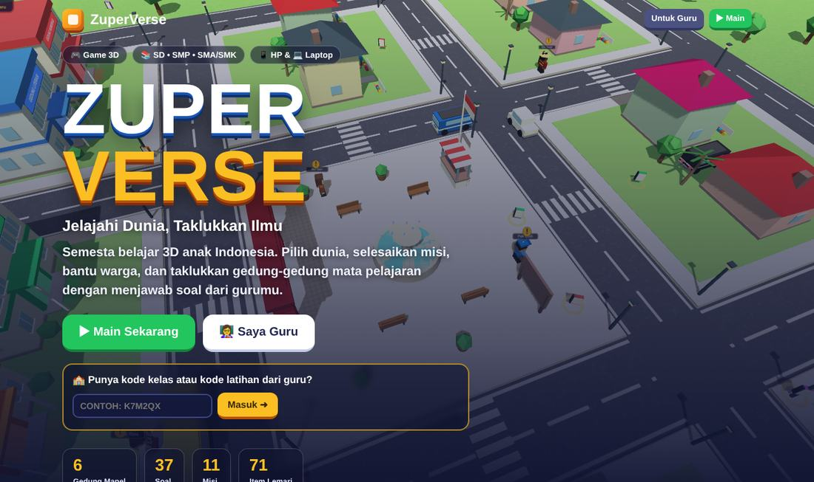
Dibuat oleh guru, untuk kelas sungguhan di Indonesia, termasuk sekolah dengan sinyal terbatas.
Belajar terasa seperti main game: ada misi, koin, lemari baju, lencana, dan main bersama teman sekelas.
Buat soal dengan bantuan AI dalam beberapa menit, atau ambil dari Bank Soal buatan guru lain.
Tidak perlu koreksi manual. Dashboard menampilkan nilai, ketuntasan, soal tersulit, dan perkembangan.
Cukup buka link. Bisa dipasang di HP atau laptop dan dimainkan tanpa sinyal. Nilai terkirim saat ada internet.
Paket soal dari guru bisa dimainkan di dunia mana pun. Setiap mapel menjadi sebuah gedung yang harus ditaklukkan.
Kota Ilmu, Samudra, Angkasa, Rimba, Nusantara, dan Mancanegara. Murid berenang di terumbu karang, melompat di Bulan, berlayar dengan pinisi ke Flores dan Bali, sampai mengunjungi Jepang dan Mesir.
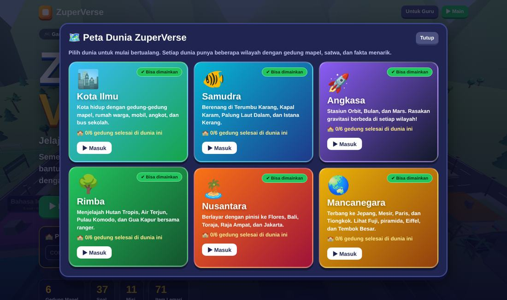
Gedung mapel tampil sesuai tema wilayah, misalnya rumah adat di Nusantara atau kubah kaca di bawah laut. Murid termotivasi menyelesaikan gedung agar wilayah berikutnya terbuka.
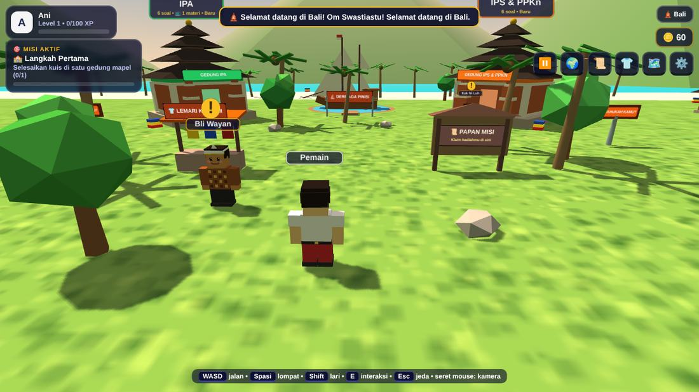
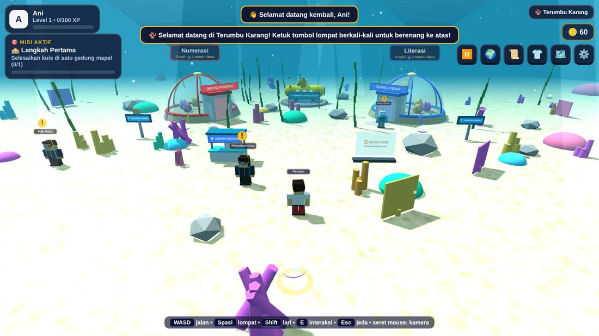
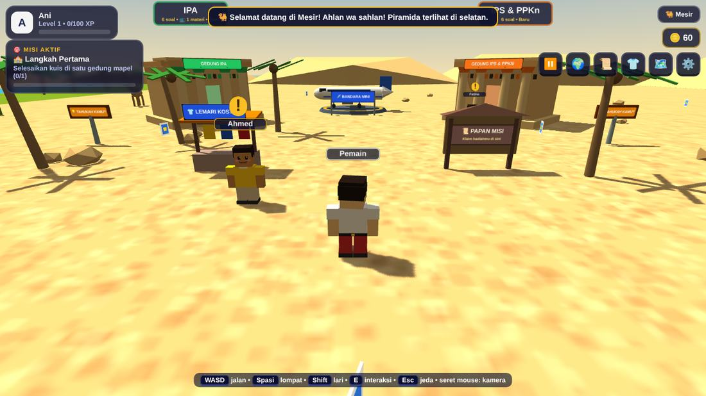
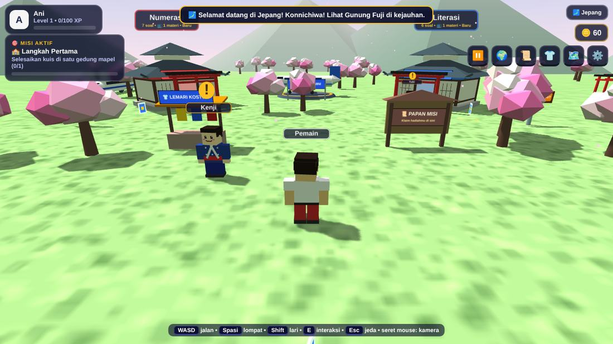
Pilihan ganda, benar/salah, isian singkat, menjodohkan, dan mengurutkan. Bisa ditambah gambar dan pembahasan. Ada tombol 🔊 yang membacakan soal, cocok untuk kelas awal SD yang belum lancar membaca.
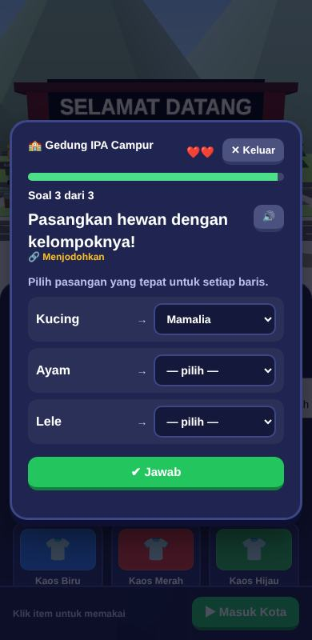
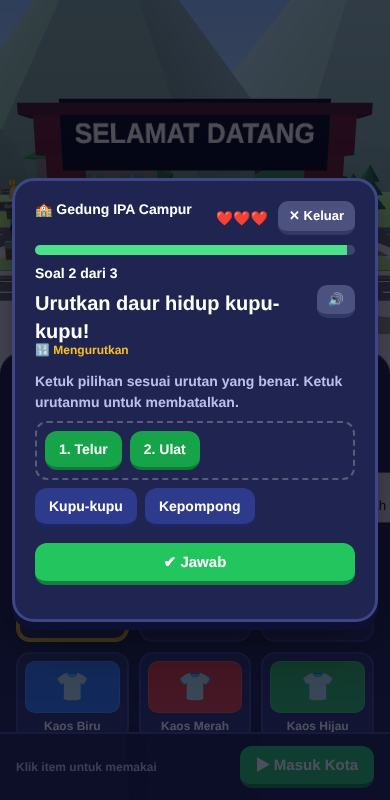
Murid mengumpulkan lencana: tamat dunia, rajin 7 hari berturut-turut, nilai sempurna, juara tantangan. Lencana tertentu bisa dicetak menjadi sertifikat. Di Riwayatku, murid melihat perkembangan nilainya sendiri.
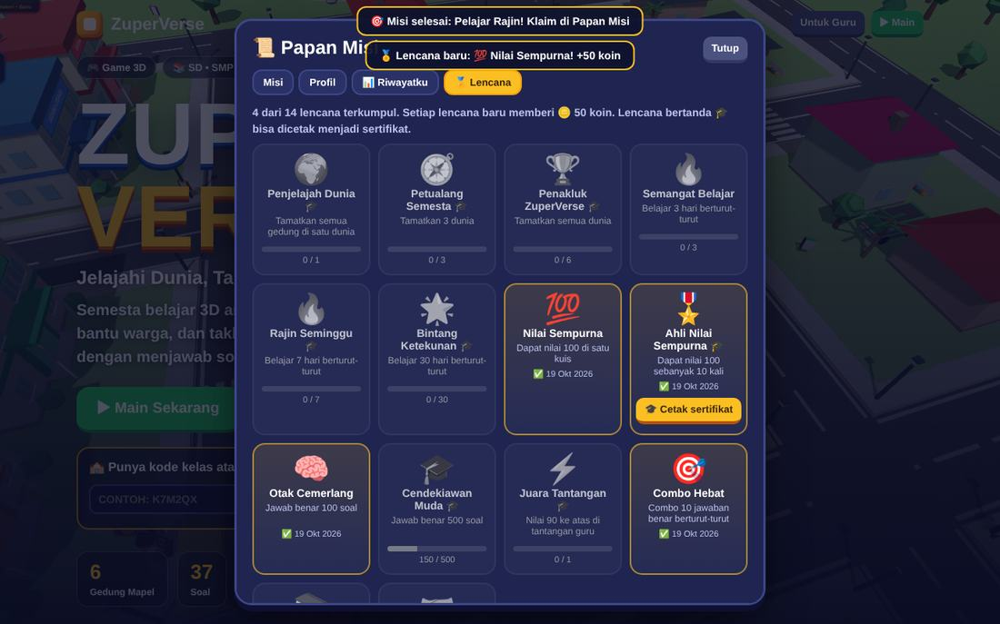
Semua alat yang biasanya tersebar di banyak aplikasi, sekarang ada dalam satu Mode Guru.
Soal dan ringkasan materi jadi dengan bantuan ChatGPT, Gemini, atau Claude. Soal lama di Word atau Excel cukup diimpor, tanpa mengetik ulang.
Simpan banyak paket soal di akun Anda. Pakai lagi di kelas lain atau tahun depan, dan lihat hasil murid per paket.
Cari paket buatan guru lain menurut topik dan jenjang, simpan dengan sekali klik, atau bagikan paket Anda sendiri.
Buat kelas, bagikan link pendek lewat WhatsApp. Murid cukup mengisi nama panggilan dan nomor absen, tanpa akun atau email.
Ulangan atau lomba di kelas: murid berkumpul di Lobi Pulau Langit, lalu terjun dengan parasut bersamaan saat guru menekan Mulai. Soal diacak per murid, waktunya sama untuk semua.
Lihat progres setiap murid detik demi detik ("Soal 4/10 • benar 3"), siapa yang perlu dibantu, kirim pengumuman, bahkan masuk ke game bersama murid.
Pilih dunia dan wilayah yang dipakai, tentukan di wilayah mana setiap gedung mapel berdiri, dan atur titik awal murid.
Main bersama dengan batas waktu, misalnya 30 menit, dengan target seperti "selesaikan 3 gedung". Saat waktu habis, game berhenti dan hasilnya masuk dashboard.
Asesmen Harian, STS, dan SAS dengan bobot skor. Nilai rapor dihitung otomatis, lengkap dengan analisis nilai dan butir soal. Unduh Excel atau PDF.
Nilai awal dan terbaik setiap murid, status tuntas berdasarkan KKTP, tingkat kesukaran dan daya beda setiap soal, grafik perkembangan per minggu, serta rekomendasi tindak lanjut.
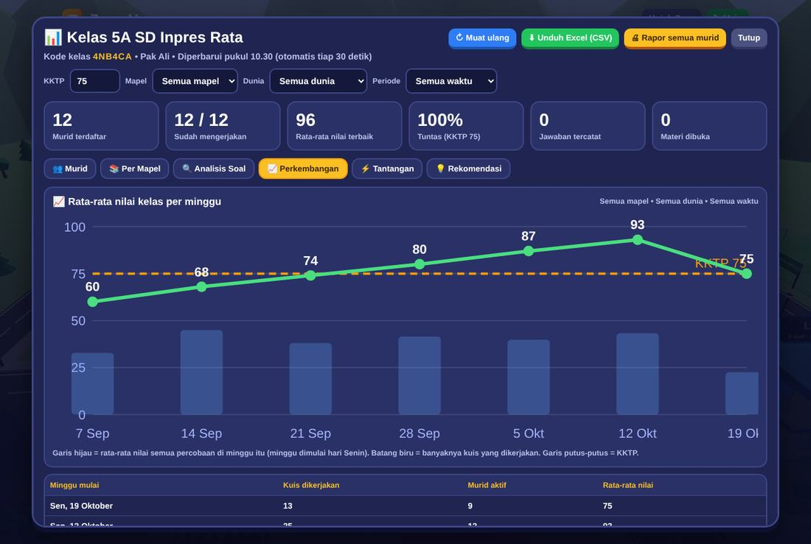
Setiap paket yang pernah dipakai mencatat siapa saja yang mengerjakan, rata-rata nilai, ketuntasan per kelas, dan soal yang paling sering salah.
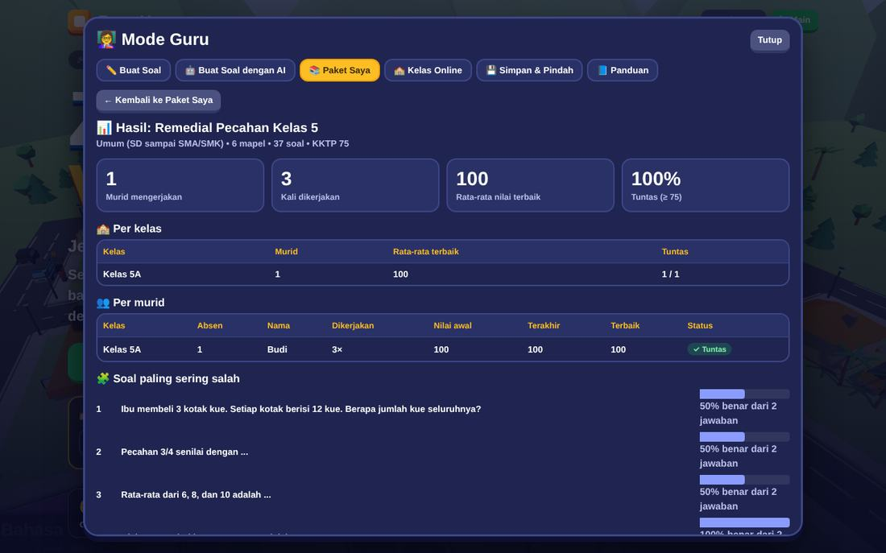
Soal ulangan yang sudah Anda punya tidak perlu diketik ulang. Pilih file Word atau Excel, soal dan kuncinya terbaca otomatis, lalu diperiksa di layar pratinjau sebelum masuk ke gedung.
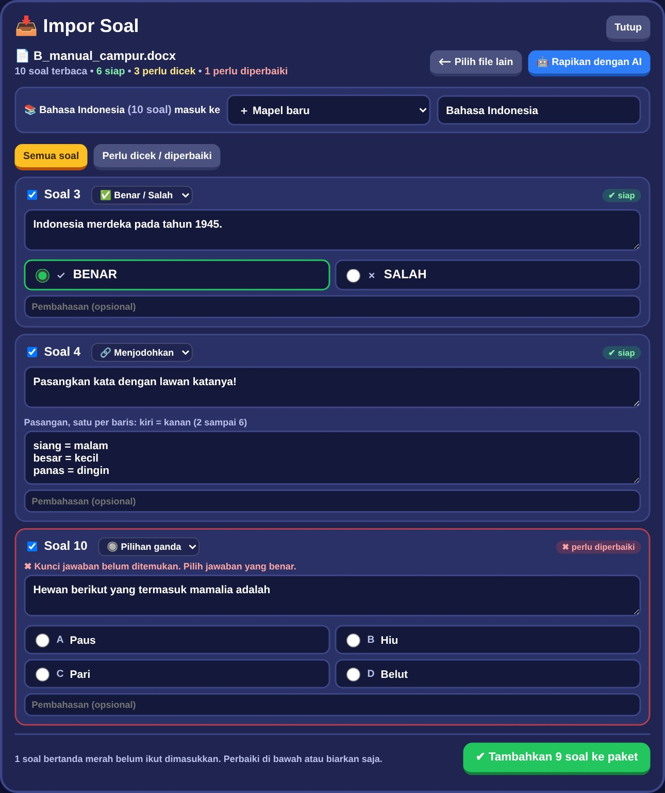
Saat tantangan serentak atau sesi petualangan berlangsung, papan peringkat berubah otomatis setiap murid menjawab. Tayangkan di proyektor dengan satu klik, dan kelas langsung jadi seru.
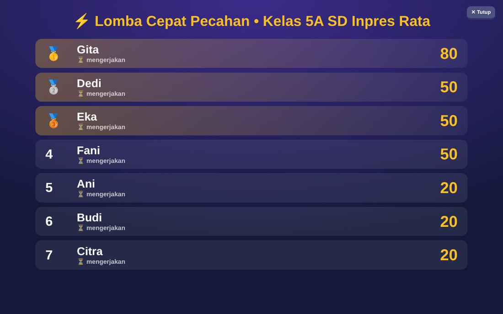
Tab Peringkat menampilkan nilai tertinggi dan terendah beserta nama murid, rata-rata, median, simpangan baku, grafik sebaran nilai, serta tertinggi dan terendah per mapel.
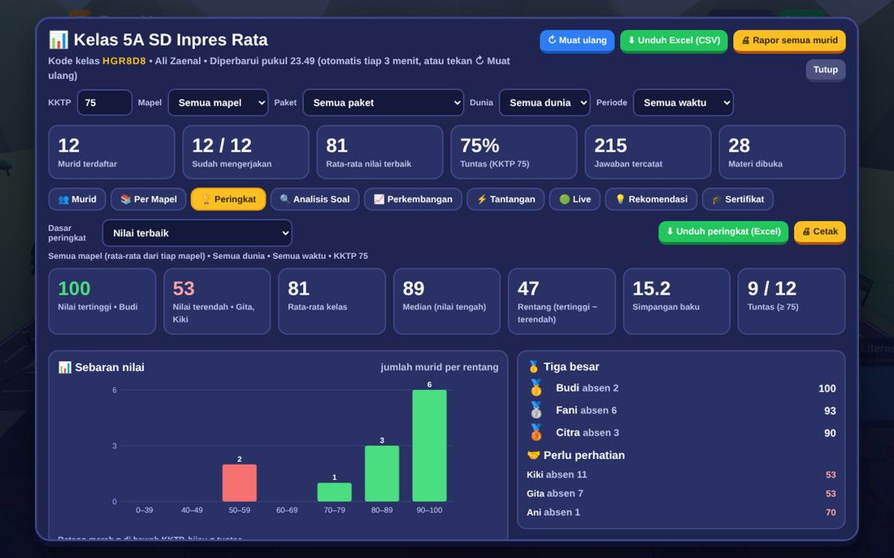
Belajar IPS di Toraja, IPA di Terumbu Karang, Matematika di Kota Ilmu. Guru memilih dunia, wilayah, letak gedung, dan titik awal murid lewat menu Peta.
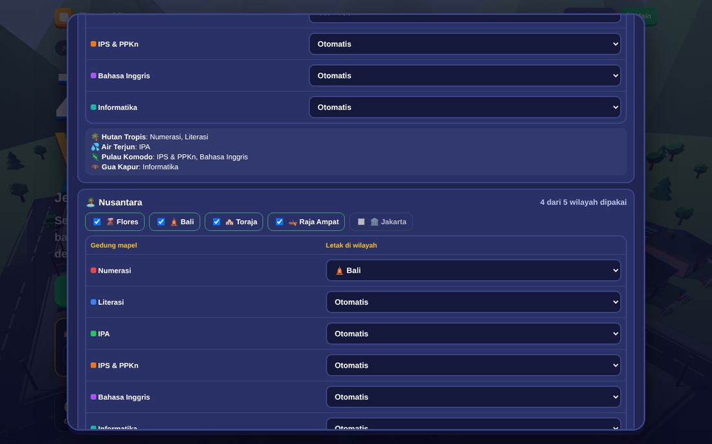
Pilih jenis sertifikat, centang murid penerima, isi nama guru dan kepala sekolah, lalu cetak atau simpan sebagai PDF ukuran A4 mendatar.
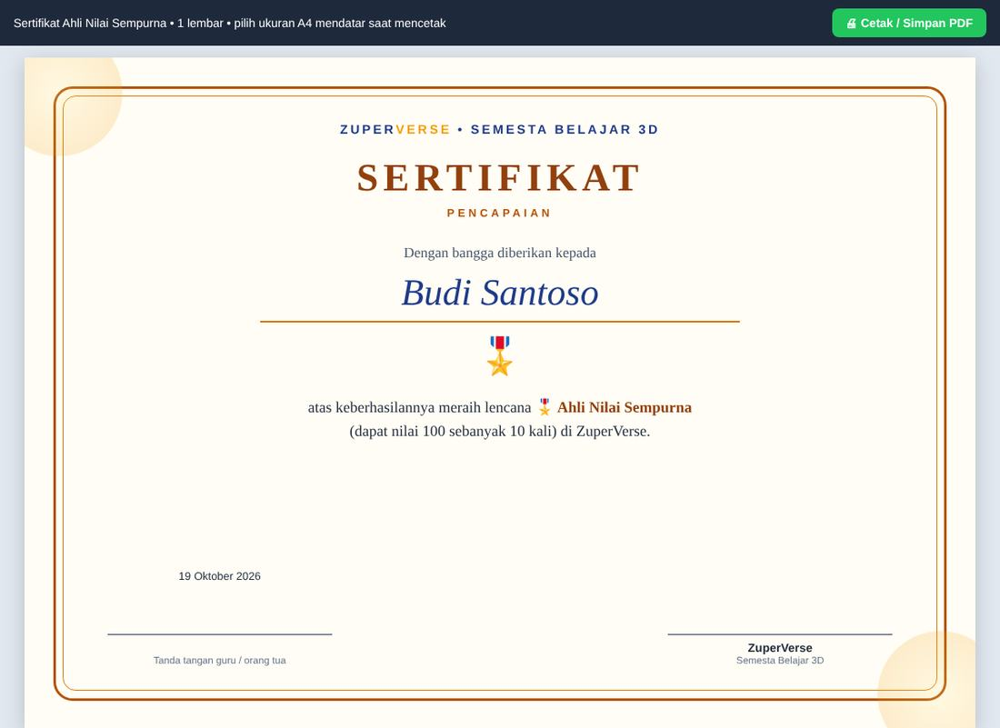
Ikuti 6 langkah ini. Di dalam Mode Guru juga ada tur singkat dan tombol ? di setiap isian.
Buka ZuperVerse, tekan 👩🏫 Saya Guru, lalu tekan Masuk dengan Google (atau daftar dengan email + kata sandi). Isi nama dan nomor WhatsApp sekali saja, lalu konfirmasi pembayaran ke admin. Setelah diaktifkan, Mode Guru langsung terbuka.
Tulis sendiri di tab ✏️ Buat Soal, gunakan 🤖 Buat Soal dengan AI, atau ambil dari 🌐 Bank Soal. Satu mapel atau topik menjadi satu gedung di game. Tekan 💾 Simpan & Terapkan.
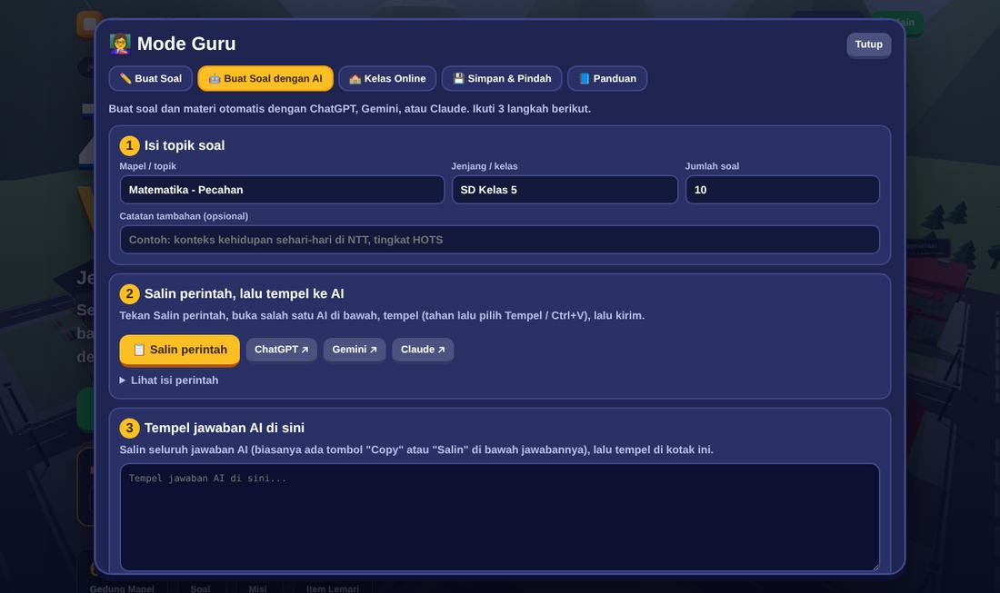
Di tab 📚 Paket Saya, tekan 💾 Simpan ke Paket Saya. Paket tersimpan di akun dan bisa dipakai lagi kapan saja.
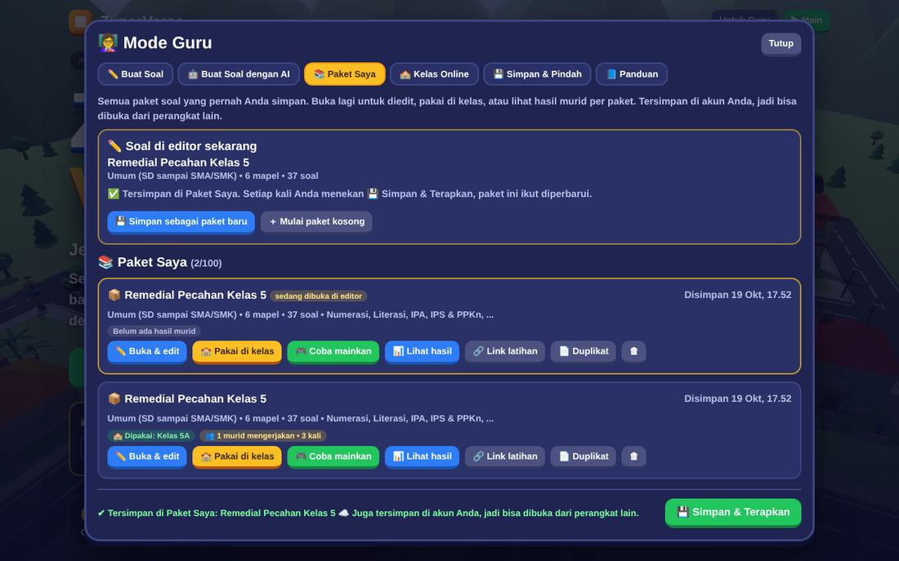
Di tab 🏫 Kelas Online, isi nama kelas dan PIN 6 angka, tekan Buat Kelas, lalu 📤 Kirim ke WA. Murid membuka link dan mengisi nama panggilan serta nomor absen.
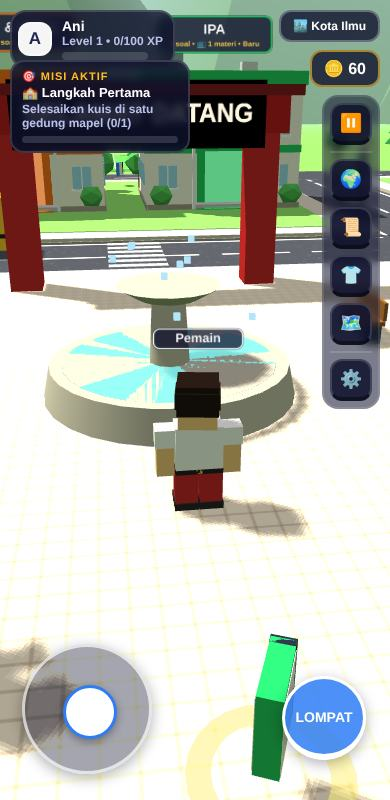
Minta murid menekan ⬇️ Pasang Offline saat ada wifi di sekolah. Setelah itu game bisa dibuka tanpa sinyal di rumah, dan nilainya terkirim otomatis begitu ada internet.
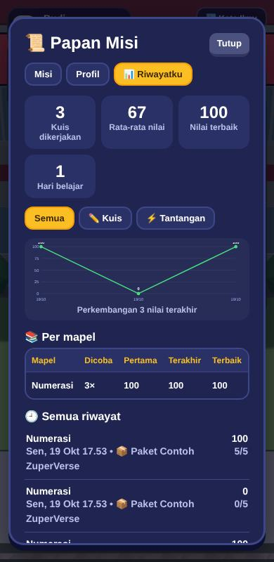
Buka 📊 Dashboard untuk melihat nilai dan analisis soal. Buat ⚡ Tantangan untuk ulangan singkat, cetak rapor, dan bagikan 🎓 Sertifikat kepada murid berprestasi.
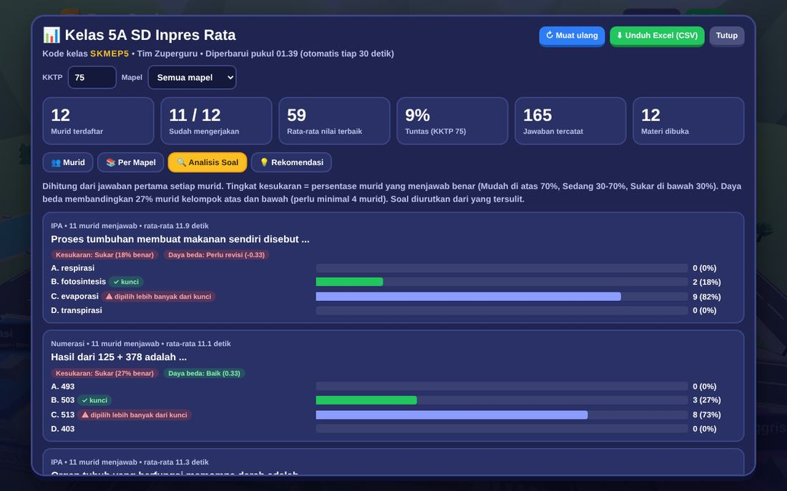
Murid bermain gratis tanpa akun. Langganan hanya dibutuhkan untuk Mode Guru.
Belum menemukan jawabannya? Tanyakan langsung ke admin lewat WhatsApp.
Tidak. Murid bermain gratis. Untuk masuk kelas, murid cukup mengisi kode kelas, nama panggilan, dan nomor absen. Tidak perlu email, nomor HP, atau kata sandi.
Tidak. Setelah dibuka sekali (atau dipasang dengan tombol ⬇️ Pasang Offline), game bisa dimainkan tanpa sinyal. Nilai disimpan di HP dan dikirim otomatis ke dashboard saat ada internet. Membuat kelas, main bersama, dan tantangan berwaktu tetap membutuhkan internet.
HP Android atau iPhone dengan browser Chrome, Safari, atau Edge versi terbaru, serta laptop atau komputer. Grafis 3D-nya ringan dan bisa diatur lebih rendah di menu Pengaturan untuk HP lama.
Untuk murid, hanya nama panggilan, nomor absen, nilai, jawaban per soal, dan materi yang dibuka. Tidak ada nomor HP, email, alamat, atau tanggal lahir murid. Untuk guru, nama, email, dan nomor WhatsApp untuk akun langganan. Bila masuk dengan Google, kata sandi tidak disimpan di server ZuperVerse. Fitur main bersama tidak memiliki chat bebas, hanya emoji dan sapaan yang sudah disediakan.
Semua jenjang (SD, SMP, SMA/SMK) dan semua mapel, karena soal dan materinya dibuat sendiri oleh guru. Anda juga bisa mengambil paket buatan guru lain di Bank Soal.
Bisa. Satu akun guru dapat dipakai di beberapa perangkat (bawaannya 3). Soal, kelas, dan Paket Saya tersimpan di akun, jadi langsung muncul di perangkat lain setelah masuk dengan akun yang sama.
Ada masa tenggang 14 hari. Setelah itu Anda tetap bisa melihat dan mengunduh nilai, tetapi tidak bisa membuat kelas, tantangan, atau mengubah soal sampai langganan diperpanjang. Perpanjangan dihitung dari tanggal habis, jadi memperpanjang lebih awal tidak merugikan.
Akun Anda tetap aman. Buka Mode Guru, tekan Masuk dengan Google atau Daftar akun baru, lalu pilih ⭐ Saya pelanggan lama dan isi kode akses serta nomor WhatsApp yang dulu dipakai. Semua kelas, murid, nilai, dan soal pindah ke akun baru Anda.
Semua soal dari AI masuk ke editor terlebih dahulu, jadi Anda bisa memeriksa dan memperbaiki kunci jawaban sebelum memakainya di kelas.
Bisa. Dashboard menampilkan nilai awal, nilai terbaik, ketuntasan berdasarkan KKTP yang Anda tentukan, analisis butir soal, dan rapor per murid. Data juga bisa diunduh ke Excel.
Coba gratis sekarang, lalu berlangganan saat Anda siap memakainya di kelas.